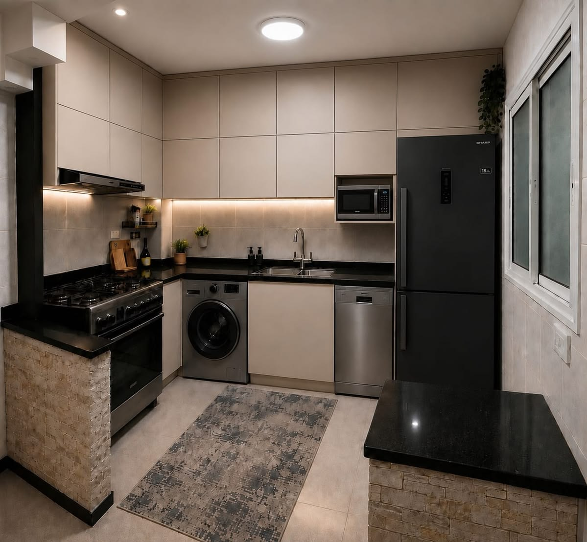
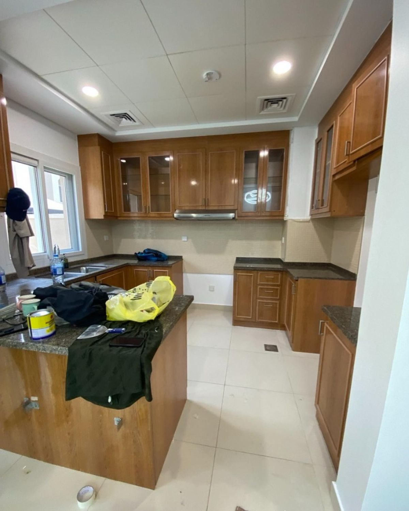
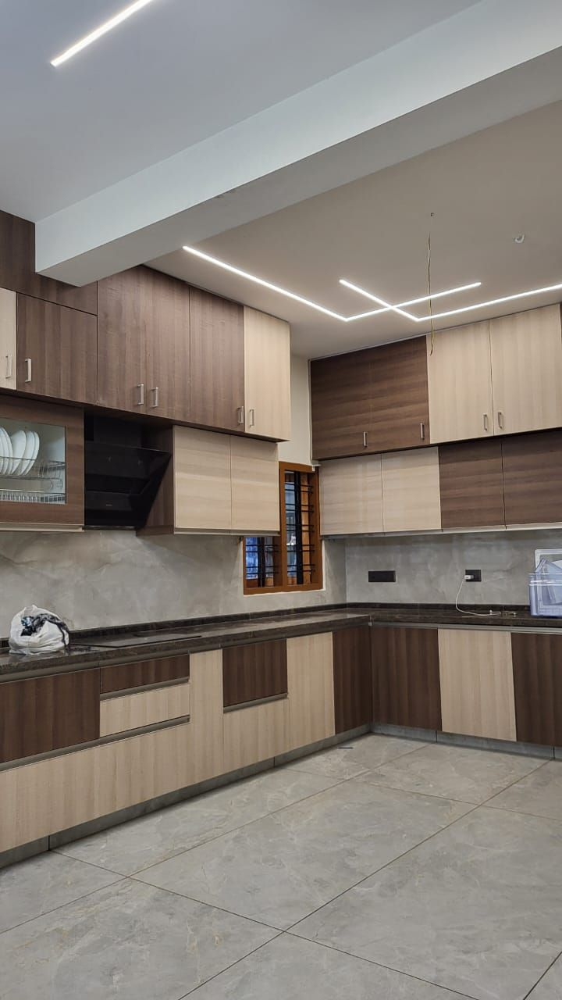
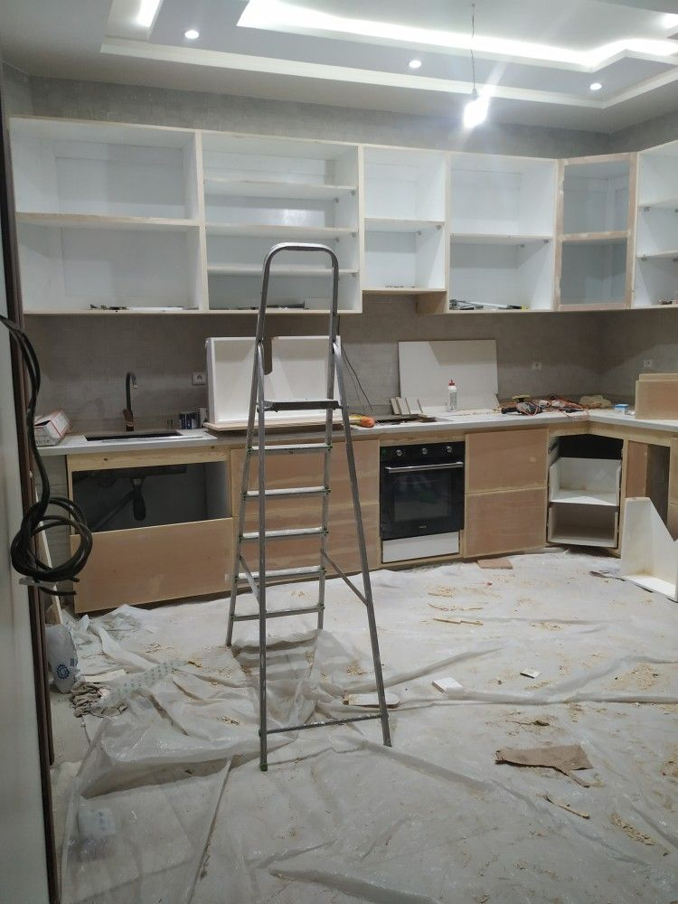
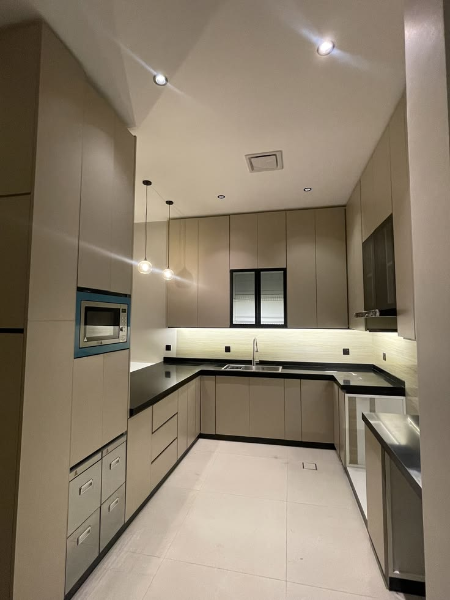
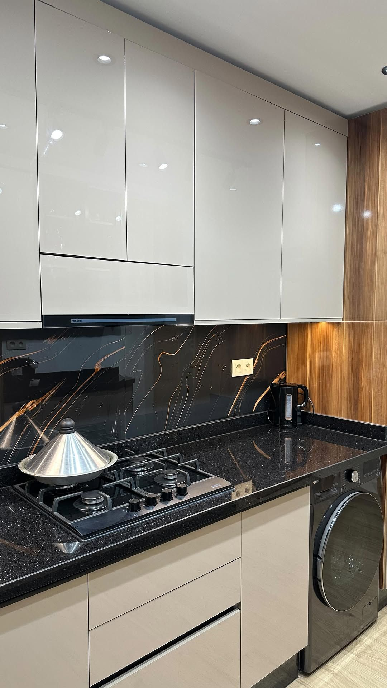
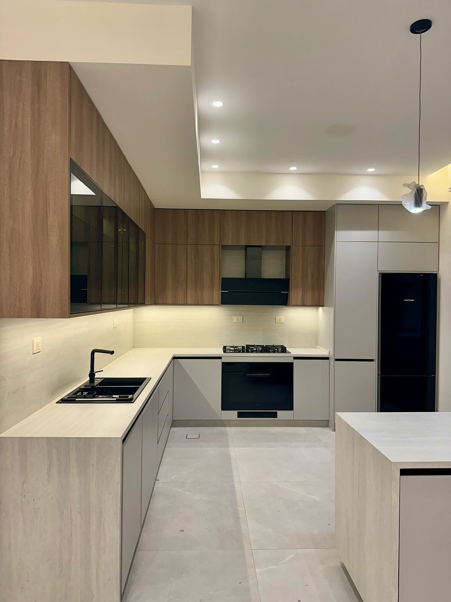

مطبخك يتقاس، يترسم، ويتصنّع عندنا
تفصيل وترميم المطابخ في المدينة المنورة. نأخذ المقاس في بيتك، نرسم لك التصميم قبل ما تدفع ريال، ونصنّع في ورشتنا مش عند وسيط.
الخدمات
من تعديل باب واحد إلى مطبخ كامل
ما نجبرك على مطبخ جديد لو الموجود يصلح. نعاين، ونقول لك بصراحة إذا الترميم يكفي.
تفصيل مطابخ ألمنيوم
الأكثر طلباً في المدينة. ما يتقوّس ولا يتعفن مع الرطوبة والحرارة، وعمره أطول من الخشب في مناخنا.
مطابخ خشب وقشرة طبيعية
خشب عالي الكثافة أو قشرة بلوط وجوز، بحواف مقفلة تمنع دخول الماء من الأطراف.
أكريليك وبولي لاك
واجهات لامعة أو مطفية بلون تختاره أنت. مقاومة للخدش وتنظّف بمسحة وحدة.
ترميم وتجديد المطبخ
نغيّر الواجهات والمفصلات والأدراج والسطح ونبقي الهيكل. يوفّر عليك جزء كبير من سعر مطبخ جديد.
أسطح كوارتز ورخام وكوريان
قص وتركيب بأقل عدد وصلات ممكن، مع حوض مدمّج وحواف حسب طلبك.
صيانة وتعديل
تغيير أبواب، إصلاح مفصلات وأدراج، إضافة وحدات، وفك وتركيب المطبخ عند الانتقال.
أعمالنا
مطابخ نفذناها في المدينة المنورة
صور من مشاريع حقيقية سلّمناها لعملائنا. بدون فلاتر ولا صور جاهزة من الإنترنت.






كيف نشتغل
أربع خطوات، وتعرف السعر من الخطوة الثانية
زيارة ومقاس
نجيك للبيت، نأخذ المقاس بدقة، ونسمع منك كيف تستخدم مطبخك يومياً.
تصميم وعرض سعر
رسم ثلاثي الأبعاد وعرض سعر مكتوب بالخامات والمقاسات. بدون بنود مخفية وبدون التزام.
التصنيع
نصنّع في ورشتنا ونرسل لك صور أثناء الشغل حتى تتابع بنفسك.
التركيب والتسليم
تركيب نظيف في يوم أو يومين، معاينة معك، ثم ضمان مكتوب.
الخامات
تختار الخامة بعد ما نشرح لك فرقها
نخدم جميع أحياء المدينة المنورة
- قباء
- العوالي
- الدفاع
- الحرة الشرقية
- الحرة الغربية
- شوران
- الجرف
- الخالدية
- بني حارثة
- سلطانة
- الرانوناء
- أبو بريقاء
أسئلة شائعة
اللي يسألنا عنه العملاء
كم تستغرق مدة تفصيل المطبخ؟
من أسبوعين إلى أربعة أسابيع حسب حجم المطبخ والخامة. الترميم والتجديد أسرع وغالباً ينتهي خلال أسبوع.
كم سعر المطبخ في المدينة المنورة؟
السعر يُحسب بالمتر الطولي ويختلف حسب الخامة ونوع السطح وعدد الوحدات. بعد زيارة المقاس نعطيك عرض سعر مكتوب ومفصّل بدون أي التزام عليك.
هل يمكن تجديد المطبخ بدون إزالته بالكامل؟
نعم، وفي كثير من الحالات يكون الهيكل سليماً ويحتاج فقط تغيير الواجهات والمفصلات والسطح. نقول لك بصراحة بعد المعاينة إذا كان الترميم يكفي.
هل تقدمون ضمان على العمل؟
نعم، ضمان مكتوب يغطي التصنيع والتركيب. نشرح لك مدته وما يشمله قبل توقيع الاتفاق.
هل تعملون خارج المدينة المنورة؟
عملنا الأساسي داخل المدينة المنورة وأحيائها. للمشاريع الكبيرة خارج المدينة تواصل معنا لنرى إمكانية التنفيذ.
ابدأ من هنا
صوّر مطبخك وأرسله على واتساب
صورة أو صورتين من جوالك تكفي. نعطيك فكرة مبدئية عن الخيارات والسعر قبل ما نزورك.